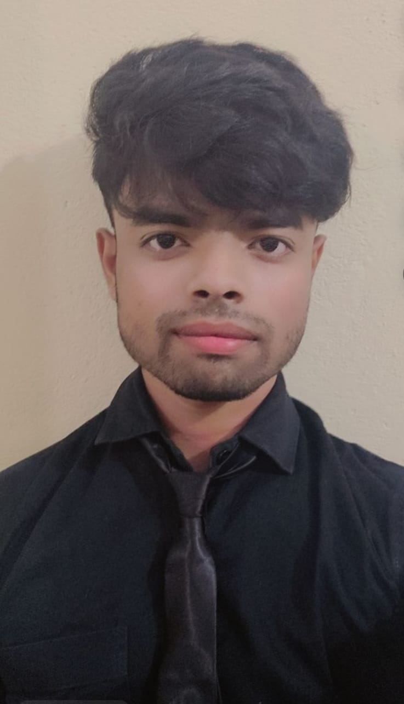

Problem Solver | Analytical Thinker | Tech Enthusiast

Hello! I am Mohd Arsil Ahmad, an MCA student at Galgotias University with a strong passion for technology. I am a problem solver, an **analytical thinker, and always eager to learn and apply new concepts. With expertise in C programming, DBMS, and Cybersecurity, I thrive on tackling challenges and optimizing solutions. I enjoy working on real-world projects and always seek opportunities for growth and innovation.
As the Vice-Captain of my college cricket team, I played a key role in leading the team to victory in the Intercollege Cricket Competition. This experience strengthened my leadership, teamwork, and strategic skills.
Email: arsilkhan7762@gmail.com
Phone: +91 8887860229